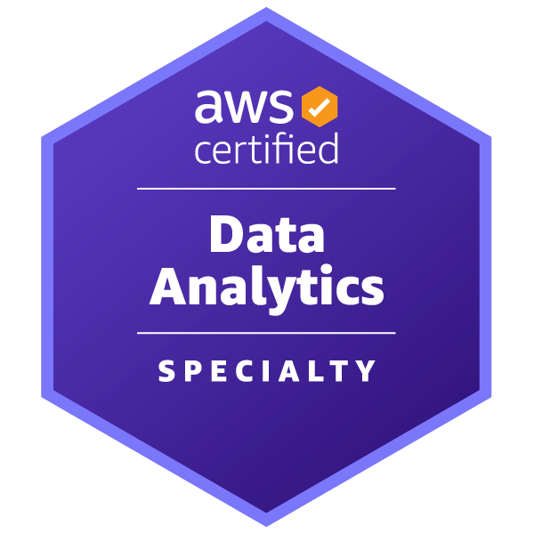

Abhinay Reddy Manda

Summary
AWS Certified Data Analytics Professional with 4+ years of experience in data analysis, providing valuable insights, and model building with deployment. Seeking a challenging position to leverage my strong analytical skills and expertise in data manipulation, visualization, and statistical analysis to drive data-driven decision-making and optimize business processes.
Education
- Masters in Applied Statistics - Colorado State Univeristy (2021-2022)
- Post Graduate Diploma in Data Science - IIIT Bangalore (2020-2021)
- Bachelors in Engineering - GITAM University (2012-2016)
Work Experience
Skills
- Programming: Python, C, Linux.
- Cloud/Big Data Frameworks: Hadoop - Yarn, Spark - PySpark, Hive, AWS Cloud.
- Data Analysis: SQL, R, SAS, Advanced Excel, ML libraries - NumPy, Pandas, Seaborn, Keras, TensorFlow.
- Business Intelligence: Power BI, Tableau, R Shiny.
- Statistical Methods: A/B Testing, Experimental Design, Regression.
- Other: Flask, Django, Postman, Docker/Kubernetes, and Visual Studio.
Certifications

Other